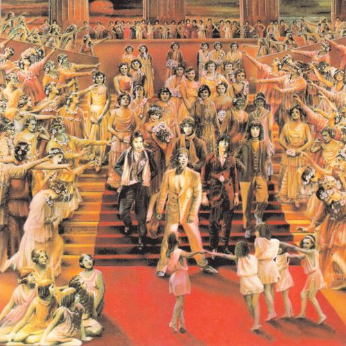
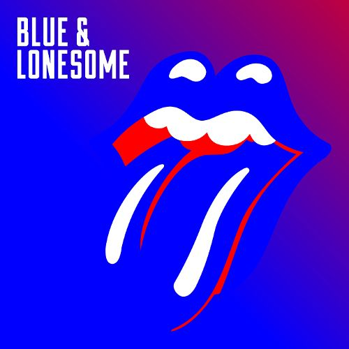
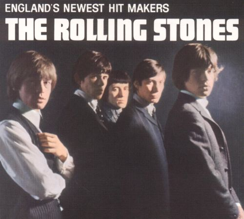

| The Rolling Stones were at the forefront of the British Invasion of bands that became popular in the United States in 1964 and were identified with the youthful and rebellious counterculture of the 1960s. Rooted in blues and early rock and roll, the band started out playing covers but found more success with their own material; songs such as (I Can't Get No) Satisfaction and Paint It Black became international hits. After a short period of musical experimentation in the mid-1960s, the group returned to its "bluesy" roots with Beggars Banquet (1968), which along with its follow-ups Let It Bleed (1969), Sticky Fingers (1971) and Exile on Main St. (1972), is generally considered to be the band's best work and is seen as their "Golden Age". It was during this period they were first introduced on stage as "The Greatest Rock and Roll Band in the World". |


